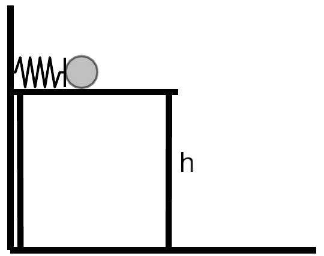
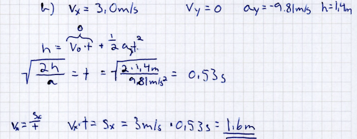

%%{init: {"themeVariables": {"fontSize": "18px"}}}%%
flowchart LR
S([Student asks]) --> L["Retrieve<br/>a librarian finds the right passages"]
L -->|"Augment: passages + question"| M["Generate<br/>the model answers, course first"]
M --> A([Answer])
C[(The course,<br/>in short passages)] --- L
classDef course fill:#fff8ec,stroke:#e8a33d
classDef model fill:#eaf6ee,stroke:#2e8b57
classDef student fill:#eef5fd,stroke:#2780e3
class C,L course
class M model
class S,A student
RAG as a possibility for productive AI usage
How can AI help with the mathematics students are actually studying?
The frame
For the next ten years, the social contract still holds.
Universities certify: a degree says the candidate passed the exams. Knowledge is chunked:
Study programme
Course
Topic
Definition Notation Example Method Exercise
AI or not, these lower-level chunks will most likely survive.
Inside the course
What we chose: this notation, these examples, these methods, and what is assessed.
Outside the course
Everything else: other books, other conventions, other levels.
What belongs to the course?
Two derivatives. Both correct mathematics. Which one belongs in this course?
\[\frac{d}{dx}\,\sqrt{x^2+1}\]
\[\frac{d}{dx}\,\sqrt{x+\sqrt{x+\sqrt{x+\sqrt{x}}}}\]
The lecturer feels which one belongs. Does the model?
Same prompt, two models
The same prompt, sent to a small and a large model: the rectangle from above, or a harder one.
What we can turn
The model
small or large
The prompt
what we ask, and how
The course
what is inside, what is outside
The first two are settings. The third we have to define, somehow.
Retrieval-Augmented Generation
One way to define the course for a model: let it read the course.
The simplest way: upload the course PDF to a chat. It works, more or less.
Soup
formulas and figures get lost on the way (3b)
A frozen copy
change the course, and every uploaded copy is out of date
Inside and outside mixed
nothing shows where the PDF ends and the model’s own knowledge begins
Somebody else’s server
every question goes to a commercial provider
RAG: look up first, then answer. Answer A in 1b did this by hand.
What lives where
The course pages
where the teacher writes them: GitHub
The librarian and the passages
a small server at NTNU; updated whenever the course changes
The language model
NTNU’s large computing cluster; nothing leaves NTNU
The student
only a web browser
Inside first: the answer comes from the course passages. Outside if needed: anything else comes after, clearly labelled.
Our RAG service: ask a question about one course.
What it is, and how it looks
Write what the mathematics is. Let the tools decide how it looks.
Plain text (Markdown): what the lecturer writes
```{math-exercise}
#| label: lund-derivative-course
#| caption: From the course (part 1)
#| vars: x
#| context: none
#| similar: true
#| harder: Combine the chain rule with a product or a quotient, keeping the function short.
#| simpler: Use a single power of a linear expression.
Differentiate $f(x)=\sqrt{x^2+1}$. $f'(x)=$ __[x/sqrt(x^2+1)]
```A few lines: the task, the answer, what “harder” means. Nothing about how it looks.
HTML: what the browser gets
Messy, huge, never written by hand. Rendered, it looks good: the exercise in part 5.
%%{init: {"themeVariables": {"fontSize": "18px"}}}%%
flowchart LR
T(["Lecturers"]) --> Q["The course, as plain text<br/>text · mathematics · code"]
Q --> W(["Website<br/>for students"])
Q --> P(["Passages<br/>for the RAG service"])
Q --> E(["Printed matter"])
classDef people fill:#eef5fd,stroke:#2780e3
classDef source fill:#f3f0fa,stroke:#6f42c1
class T,W,P,E people
class Q source
Written once, as plain text. The website, the RAG service and printed matter are views of it. There is no AI version of the course.
PDF: only the looks
A PDF keeps how the page looks, and loses what it is.
Copy the text out of a PDF of our physics exercises:
| On the page | Copied out of the PDF | In our plain text |
|---|---|---|
| \(3{,}93\cdot10^{26}\,\mathrm{W}\) | 3,93 ⋅ 1026 W |
$3{,}93\cdot10^{26}\,\mathrm{W}$ |
| \(4{,}50\cdot10^{23}\) molekyler | 4,50 ⋅ 1023 molekyler |
$4{,}50\cdot10^{23}$ molekyler |
| \(U_1=150\,\mathrm{V}\) | 𝑈𝑈1 = 150 V |
$U_1=150\,\mathrm{V}$ |
| the figure | (nothing) |  |
The power of a star became 1026 watts: one microwave oven.
Special models guess the structure back, and still get the mathematics wrong. Start from plain text, and there is nothing to guess.
Many lecturers, one course
Because it is plain text, every change is saved, read before it goes live, and can be undone.
- Lecturer A changes the vector notation in week 3
- Lecturer B adds an exercise on eigenvalues
- Lecturer C reads both changes and approves them
- Published both go live
In GitHub’s words: commits, pull requests, history.
Fix it once: a corrected sign reaches the website and the RAG service together.
Open source
The text lasts; the views change. The course belongs to its lecturers, not to a platform.
Any server
GitHub today, another place tomorrow
Plain text files
readable in ten years, by any tool and any model
Share and reuse
between courses and between universities
Free, open-source tools: Quarto, Pyodide, CTM Assessment.
Assessment: deterministic and stochastic
What students do has to be assessed.
But any written product made at home is no longer authentic: a model may have written it. The text alone no longer shows who did the thinking.
So we split the work:
Small chunks
basic skills, practised one by one, with immediate feedback
Larger projects
skills combined; any tool, AI included; but students explain their work, to each other or to us
Here: the core skills. Online, this is formative: it helps students through a constructive struggle.
Deterministic: the check
The same answer gives the same result, every time.
Stochastic: the AI
Reads the task, the student’s work and the teacher’s prompt (4c), then suggests the next step. It can vary, and it can be wrong.
The check decides what it can check. The AI helps with the way there.
A derivative
Write largest_area(p): the largest area of a rectangle with perimeter p (in cm). For example, largest_area(20) is 25.
A ball lies on a table and is launched by a horizontal spring. The height of the table top above the ground is \(h=1.40\,\mathrm{m}\). As the ball leaves the spring, its speed is \(3.00\,\mathrm{m/s}\), and it rolls without change of speed to the edge of the table.

How far does the ball move horizontally from the edge of the table until it lands?
Final answer
Show your working. Upload a photo of what you wrote on paper.
Paper and typed
The physics problem from the tab above, twice:
On paper: how students think

Typed: what the machine checks
1.6No unit, no formula, no steps: only the number.
The check needs it typed. Language models can now read the paper.
A photo of the working gets step-by-step hints: try it above, or more physics exercises.
With AI, the teacher has to be explicit
How to help (every problem)
handwriting:
language: English
steps:
- Level 1, find the mistake: point to it, do not give correct values.
- Level 2, explanation: which law applies; no numbers, no final answer.
- Level 3, method: numbered steps, stop before the numbers.
- Level 4, worked solution.The ladder keeps the struggle constructive: each click gives a little more help, and the solution comes last.
What to know (this problem)
v25-4b:
base-prompt: >-
Reference: vertically h = ½gt², so t = √(2h/g) = 0.534 s.
Horizontally x = v·t = 3.00 · 0.534 = 1.60 m.
Typical mistakes: wrong rearrangement of h = ½gt² (for example
t = √(h + ½g)); mixes up horizontal and vertical motion.Shortened from the prompt files of the physics exercises. Teachers can try their own changes in the prompt sandbox on the physics exercises page.
Teachers always knew this. Now it has to be written down.
The task
what the student sees
The check
decides whether the answer is right
The prompt
the teacher’s knowledge, written into the course
More practice, on request
Easier, similar, harder: the model writes new problems.
Try Similar problem on this exercise:
From the course (part 1)
Direct
the exercise and the teacher’s words for “harder” and “easier” go to the model
With RAG
the course passages on the same topic go along too, so new problems use our notation and methods
Everything a model can write
Near the course: what RAG keeps it to
Written and checked by us
Even near the course, we give away control in exchange for a richer problem space.
Is it relevant?
- the teacher says what “harder” and “easier” mean
- with RAG, the course sets the frame
Is it solved correctly?
- computer algebra works out the answer where it can
- otherwise it is marked unverified
- it never counts toward grades
“Harder” is the model’s reading of difficulty. How it matches what this learner finds hard is an open question.
The point
- 0–1 Model and prompt are settings. The course we have to define.
- 2 Let the model read the course: inside first, outside clearly labelled.
- 3 Write it once, as plain text: every view follows, many can work on it, no platform owns it.
- 4 Written work from home is no longer proof: projects are explained, to each other or to us.
- 4 Core skills, formative: a check where it can decide, AI for the way there; what teachers know must be written down.
- 5 We give away control in exchange for a richer problem space.
The course, written down, is the frame for productive AI.